For this homework, we experimented with bezier curves and surfaces through the de Casteljau algorithm. We utilized
the linear interpolation function we learned last homework and we thought it was really cool how the line
was so smoothly curved. For the second section of the homework we manipulated the teapot mesh in various ways
to obtain better shading estimation and also edit the mesh itself to implement loop-subdivision upsampling.
Through this section, we learned a lot about the half-edge data structure and how it can effectively enable
mesh manipulations.
Section I: Bezier Curves and Surfaces
Part 1: Bezier curves with 1D de Casteljau subdivision
To create a Bezier curve with 1D de Casteljau subdivisions, we find intermediate control points on each line with
ratio t then connect them with a line. We repeated this process with n-1 new control points and lines until
there is 1 point on the last remaining line. With this 1 point, we have found the correct position for the
curve at time t. By iterating over t with small increments, we are able to draw the full curve.
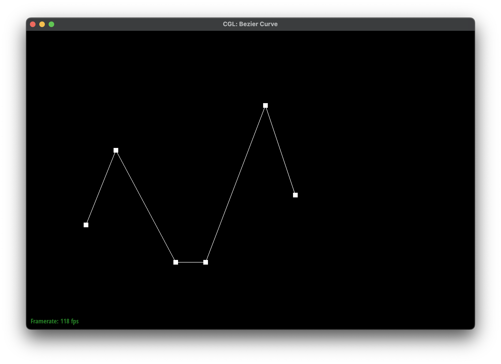
level 1
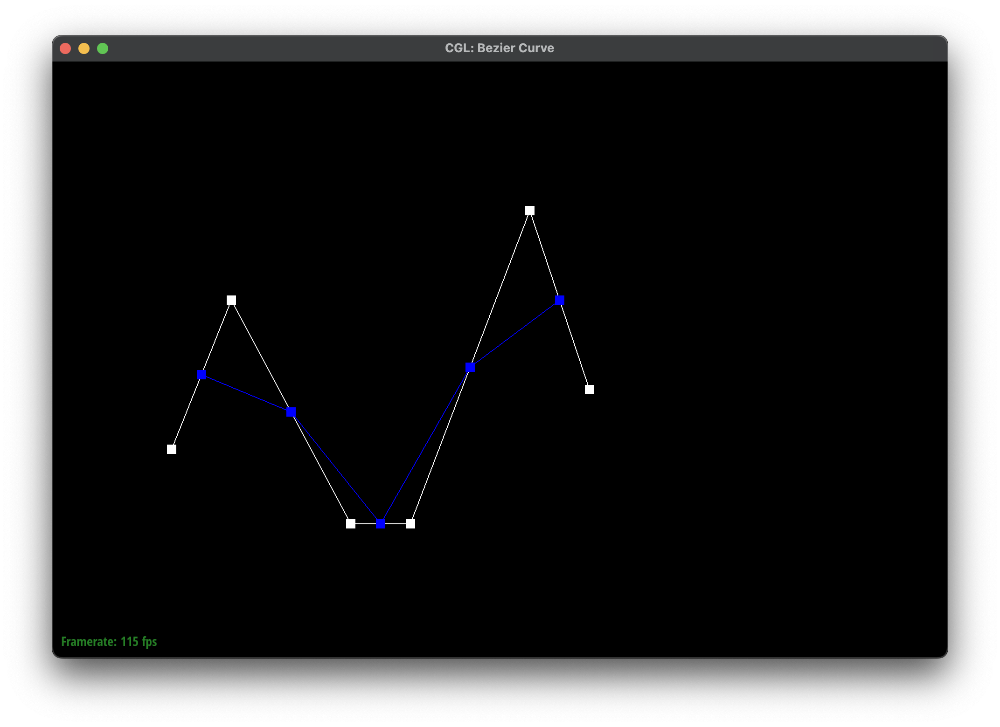
level 2
level 3
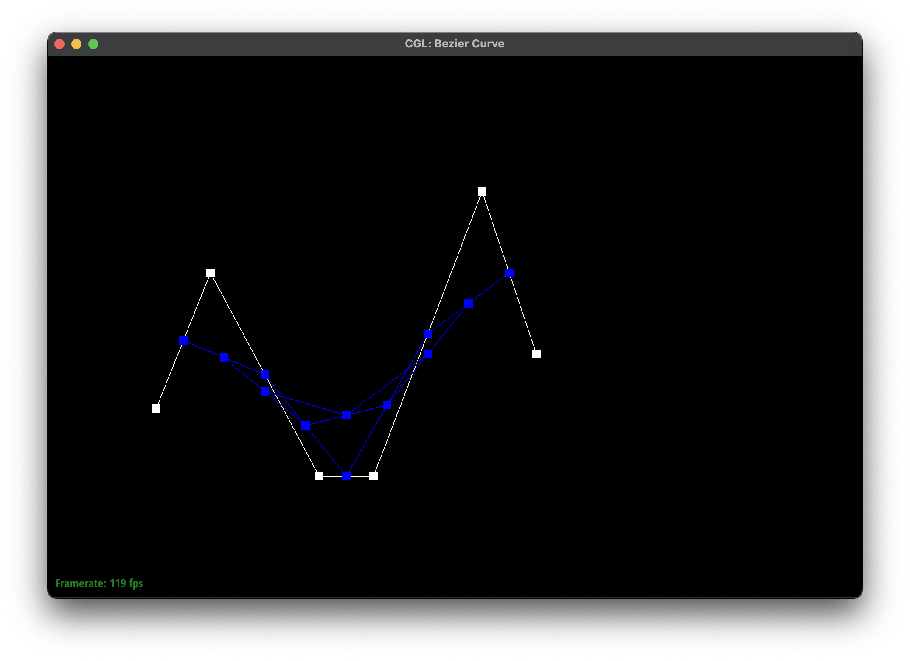
level 4
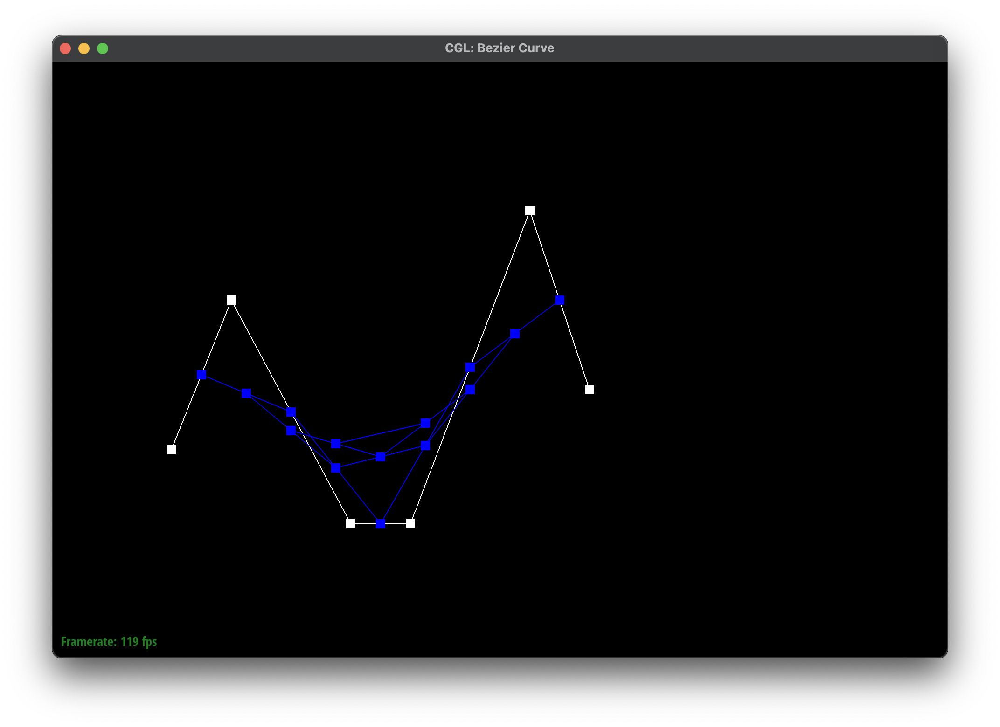
level 5
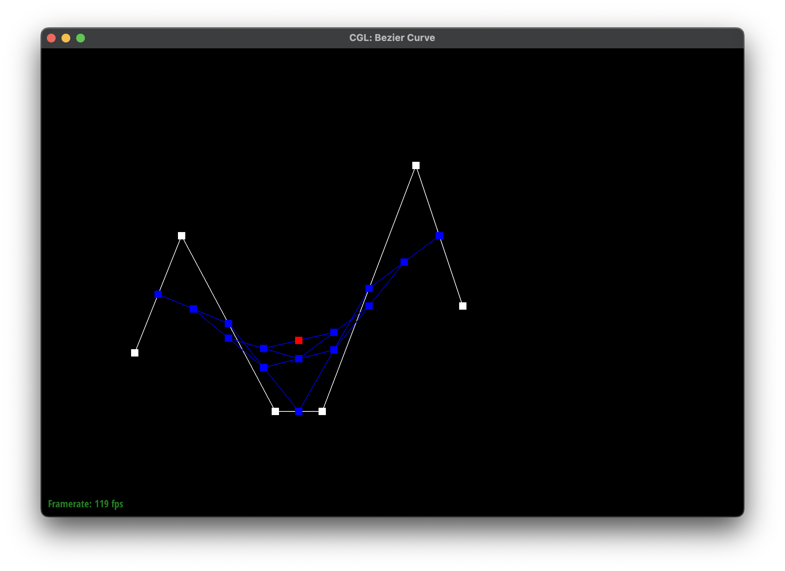
level 6
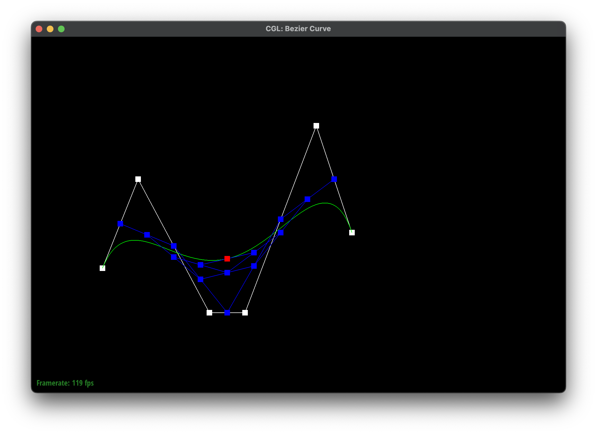
with curve
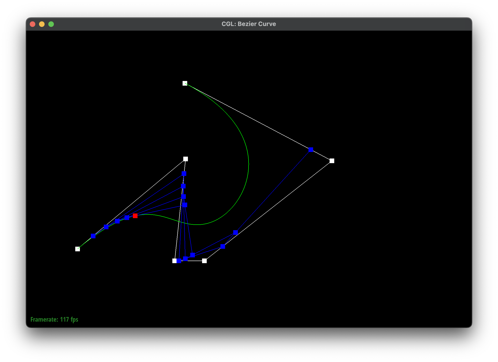
points & t moved
Part 2: Bezier surfaces with separable 1D de Casteljau
It is possible to extend de Casteljau algorithm to Bezier surfaces by
considering each of the N 1xN control points separately. This way, we will essentially have
N rows of bezier curves. By evaluating the curves with the 1D de Casteljau algorithm,
we will find the final points at parameter u for these rows which form the basis control points
for the bezier curve on the other axis. Finally, that curve can be evaluated with the parameter
v to determine the point on the bezier surface.
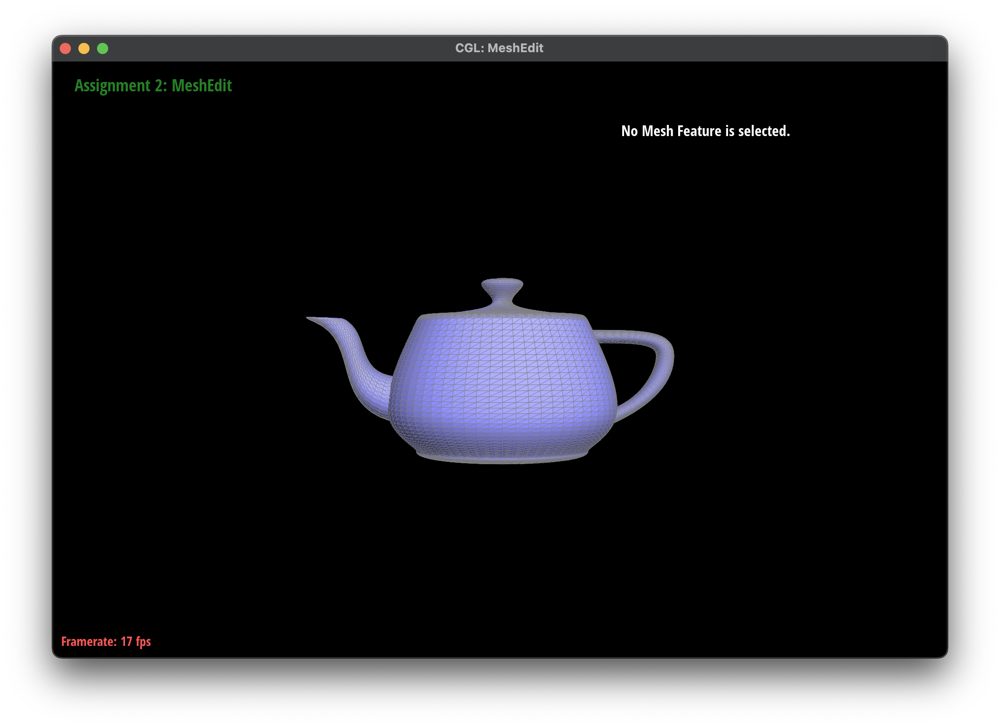
bez/teapot.bez
Section II: Triangle Meshes and Half-Edge Data Structure
Part 3: Area-weighted vertex normals
In order to implement area-weighted vertex normals, we first found all of the faces adjacent
to the specified vertex. Specifically, we referenced the existing helper function printNeighborPositions.
Then, we found the area of the faces via iterating through all of the
vertices’ positions and using the 1/2 vector cross product formula. Lastly, we found the surface norm
of the face which was multiplied by the surface area. Summing it together then normalizing it,
yielded the normalized vector representing the area-weighted vertex normal.
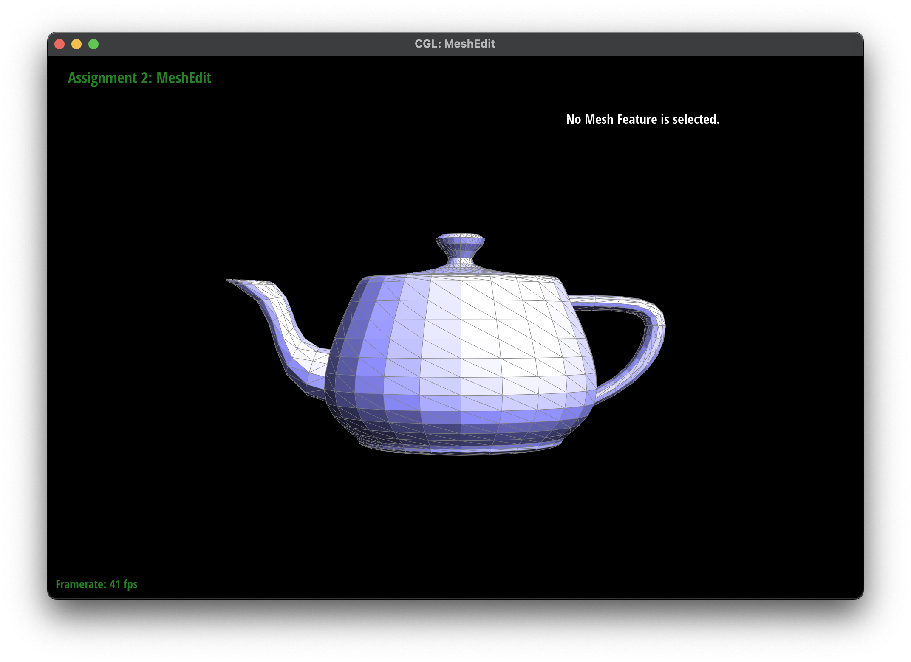
Flat Shading
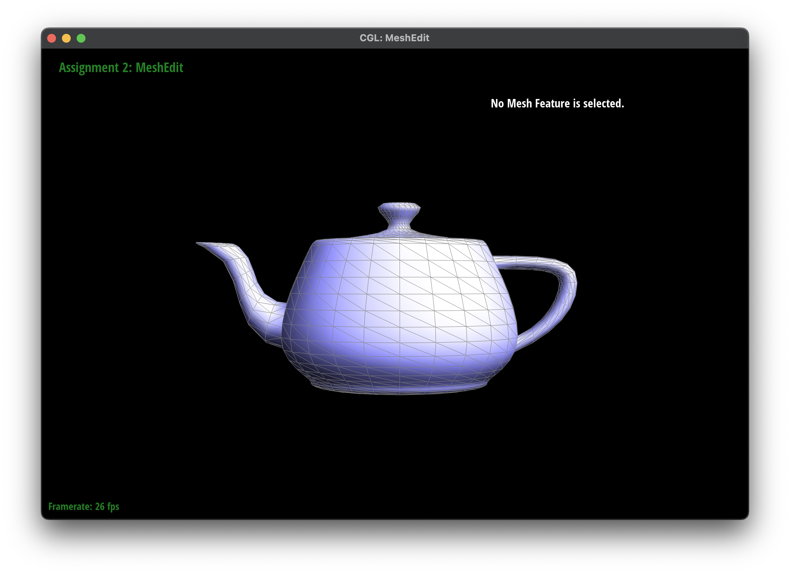
Area-Weighted Normal Shading
Part 4: Edge flip
Implementing edge flip took a lot of trial-and-error in terms of debugging and figuring out why certain
triangles disappeared or crashed the mesh editor. Besides the debugging, our final edge flip was implemented
using various half-edge traversals and defining variables corresponding to each vertex / half-edge / face
which was then used for reassignment. Since we decided to keep the bcb (bc and cb) edge, we also decided
on the "flip orientation" which was counter-clockwise and turned the bc and cb half edges into ad and da
half edges, respectively.
At first, we thought we could get away with doing every reassignment in code without drawing it out. However,
it was very common for us to miss updating an halfedge or two. This would inevitably lead to the program
crashing or weird resulting meshes. Then, I tried writing out the half edges and all the changes along with
printing out the before/after of the data structures which revealed a lot of our issues stemming from
forgetting to set the new halfedge neighbors.
before flip
after flip
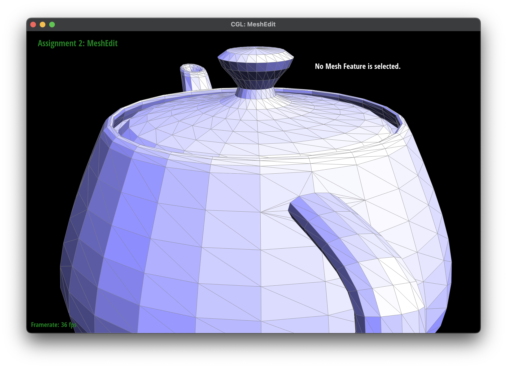
before flip
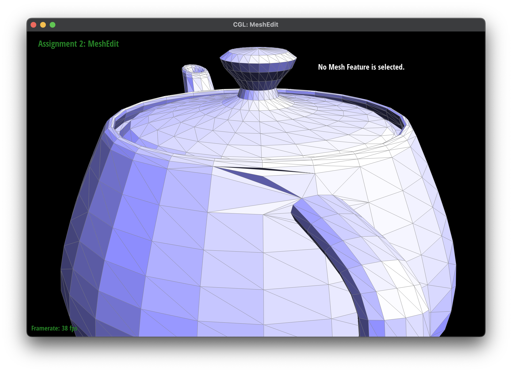
some funky edges
more weird edges
Part 5: Edge split
After the lessons learned from part 4, implementing edge splits ended up being quite straight forward. First,
we made variables that referenced each vertex, half-edge, and face by the same names on the homework diagram
to make clear which modifications we were making. Then, we wrote out which half edges exist (and are therefore
likely to be needed to change). The only different part was that we also created a new vertex with 6/3 new
half-edge/edges and 2 new faces. Keeping track of the new elements was simple with variables.
Following the same process as part 4, we wrote out all the new references for each element and proceeded to
set the correct neighbors / half-edges. With this process, we barely had to debug at all. I think in the end,
we had messed up a source vertex in one of the half-edge which crashed the meshedit but it was easily caught
since we were able to just reference the diagram / expected state.
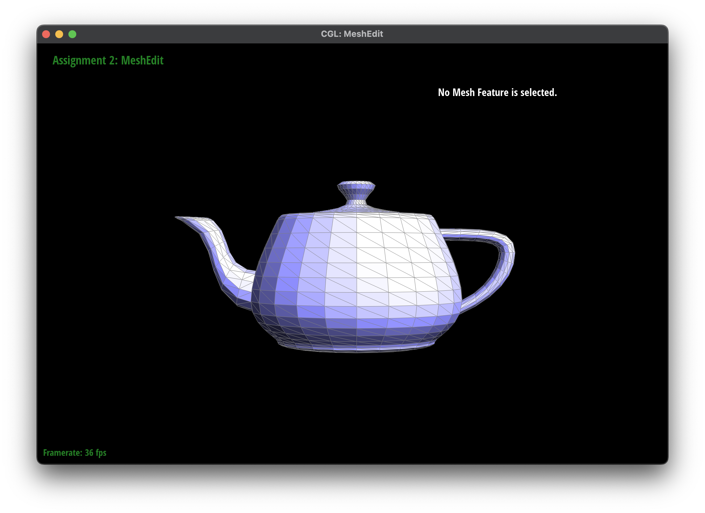
before split
split into X
before split and flip
split and flipped into diamond
Part 6: Loop subdivision for mesh upsampling
Implementing loop subdivison was prohaps the most challenging portion of the homework for us due to the
particularities involved in updating the vertices' positions. The process itself is split into two portions:
sub dividing the triangles then update the vertex position to average out the surrounding surface geometries.
Specifically, we followed the recommended process of first pre-computing the new vertex position for both old
and the expected new vertices (from splitting). Then, we ran edge-split on every old edge in the mesh which
was possible by setting the isNew flag in the edge instances. Further using the isNew property, we also
found the new edges that are adjacent to an old and new vertex since these edges needed to be flipped. After
flipping these edges, we could finally update all the vertex positions and reset the isNew flags.
In the process of implementing this algorithm, we ran into a lot of issues in terms of vertex new positions
being clearly out of place (e.g., all zeros, magnitudes higher). In addition, we sometimes found infinite
loops with the edge splits or flips. In order to solve this, we kind of followed the playbook we established
from part 4 and 5. In particular, we set a breakpoint at the start of the program following printing out
the addresses of some edges that we wanted to observe. Then, we can calculate the expected vertex new position
from the split and observe whether or not the program proceeds to split that edge and if the updated vertex
position is as expected. However, since everything was stored in iterators, it became a bit tedious doing the
&*edge trick in the debugger and we ended up adding a lot of printfs which was stored in a log file
and further inspected to see before/afters over the entire mesh. In the end, we found that a lot of the issues
stem from incorrect isNew tracking of the edge being split (because it is New but it shouldn't
be considered new in the context of flipping new edges). Since we didn't want to modify the mesh data structure,
we had to use a hacky way of setting the corresponding vertex's position vector to something ridiculous to act
like a second flag.
In the end, we were very pleased with the results! All the sharp creases and edges were notably smoothed down
after 2-3 iterations of the loop subdivision algorithm (e.g., the lid handle, creases).
Pre-splitting the edges, however, seemed to add a crinkle into the teapot since it broke up the
straight creases running down the outside.
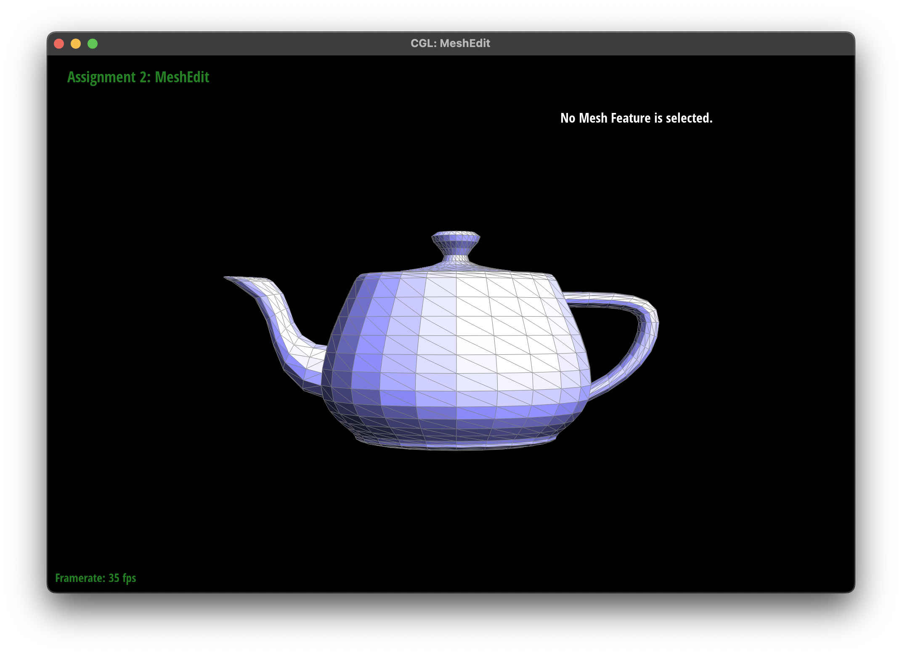
before
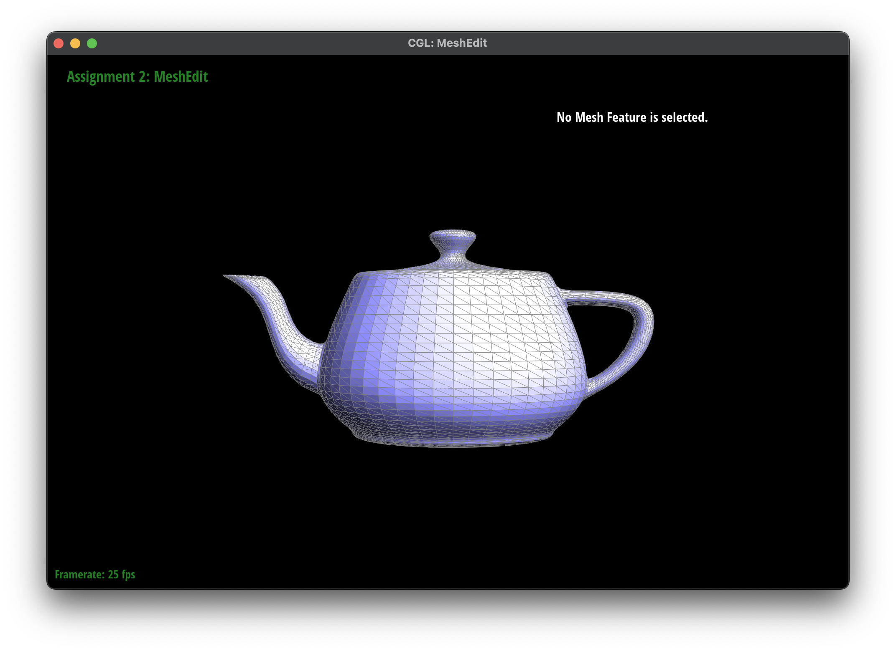
1 subdivision
2 subdivisions
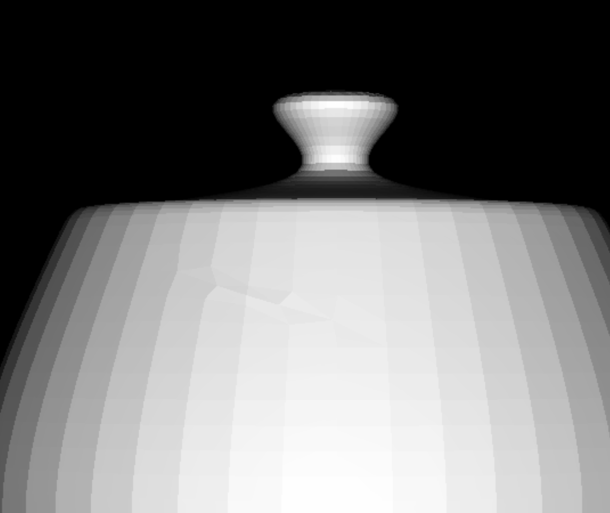
crinkle
Another view showing the handle-pot interface getting smoother, the lid handle rounding off:
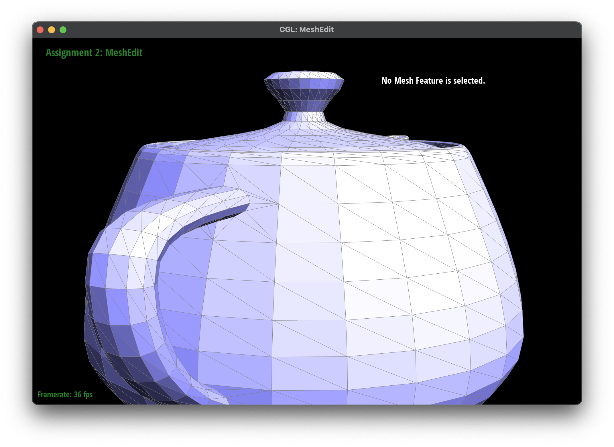
before
1 subdivision
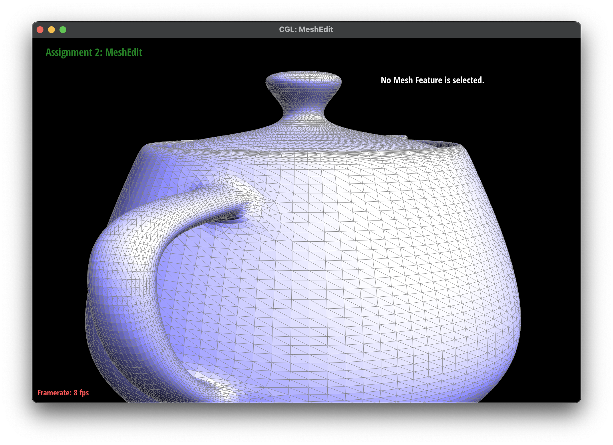
2 subdivisions
The cube ended when subdivided ended up being asymmetrical and kind of lopsided because the mesh was
constructed with two triangles representing the face of each square. This meant that the vertices on the
corners of the cube would essentially have different magnitudes in terms of moving from the original location
in the subdivision algorithm (with each corner being different distances to the neighbors). This eventually
stretch and shrinks the corners into the lopsided shape.
To remedy this situation, we pre-processed the cube by splitting each of the cube's faces into 4 triangles
via splitting the edge running in between the two triangles. This way, all 8 vertices making up the cube's
corners would be equidistant to each other and their neighbors. Running the subdivision after this caused
the cube-like symmetry intact.